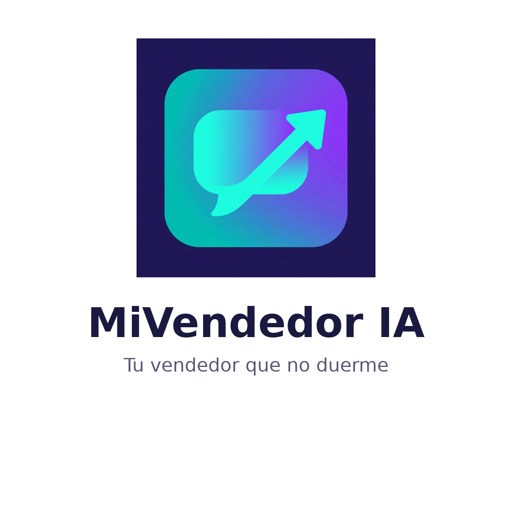

Clientes que vuelven
El sistema de seguimiento para que ningún cliente se enfríe. La base de MiVendedor IA, en ebook.
USD 9,99
Ver detalles

Recupera clientes que ya pagaste por conseguir. Cada día te dice a quién escribir por WhatsApp, con el mensaje ya escrito, y te muestra cuánta plata recuperaste. Sin instalar nada, desde tu celular.
La demo trae datos de ejemplo y permite cargar hasta 5 clientes propios.
Conseguir un cliente nuevo cuesta 5 a 7 veces más que recuperar uno que ya compró. Y sin embargo, todos los días se pierden ventas por algo simple: nadie le escribió al cliente que no volvió. Los contactos quedan en cuadernos, en la memoria y en chats viejos, y el cliente se enfría en silencio.
MiVendedor IA no es un curso que explica cómo hacer seguimiento. Es el que hace el seguimiento por ti.
Es para dueños y vendedores de negocios de cualquier rubro — ópticas, peluquerías, tiendas, consultorios, servicios y ventas por WhatsApp — que atienden sus propios mensajes y pierden ventas por falta de seguimiento. No requiere saber de tecnología: se abre en el navegador del celular. No es para empresas grandes con CRM corporativo, ni un curso teórico: es una herramienta de trabajo diario.
Un empleado que haga este seguimiento cuesta varias veces más por mes, y un community manager también. MiVendedor IA cuesta USD 29 por mes (o USD 290 al año, con 2 meses de regalo), cancelable cuando quieras. Y con 7 días de garantía total: si no te sirve, te devuelven el 100%.
Un solo cliente recuperado en tu negocio paga varios meses de la herramienta.
El sistema de seguimiento, explicado paso a paso, y el pack para vender por WhatsApp.
El sistema de seguimiento para que ningún cliente se enfríe. La base de MiVendedor IA, en ebook.

Vendé por WhatsApp e Instagram con guiones y plantillas listas para copiar y pegar.